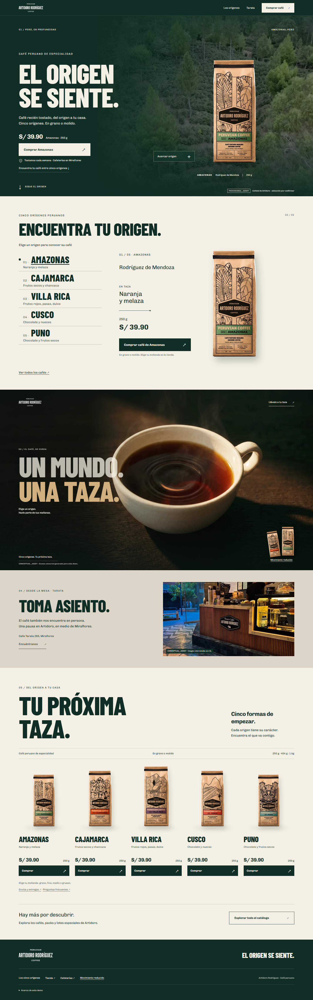
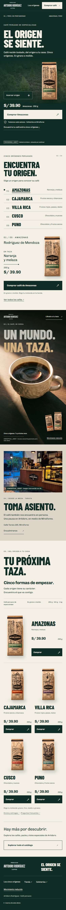

Snapshot del 25 de septiembre. La sección 04 cambió después. Ver Tarata actual y home completa →
Artidoro Rodríguez / Revisión · 25.09.2026
Perú, en profundidad.
La home completa.
01 presencia → 02 elección → 03 deseo → 04 cercanía → 05 compra. Cinco cafés, un momento cinematográfico común y compra accesible durante todo el recorrido.
Abrir demo navegable ↗ Entrega, QA y archivosEl servidor local debe estar activo. Los videos y capturas de esta página también funcionan al abrir este archivo localmente. No se hizo commit final.
03 — De la superficie a la taza
Dos clips de siete segundos, horizontal y vertical. En la home el scroll controla el avance y permite retroceder. Packaging, marca, texto y enlaces son elementos reales de la interfaz, fuera del video generado.
Media conceptual generada, no documentación de un origen ni de un proceso de preparación. Cuatro stills Nano Banana Pro + dos videos Kling V3 mediante APIMart. Coste de esta fase: US$1.0608. Prompts, tareas, fuentes y costes.
Frames clave del video


03 con interfaz desktop · 03 con interfaz mobile


Home completa
Capturas Chromium, DPR 1, viewport 1440 × 900 y 390 × 844. Movimiento reducido activo para capturar todo el recorrido con el poster de 03. La animación se revisa en la demo o en los clips de arriba. Pulsa una captura para verla a tamaño completo.



